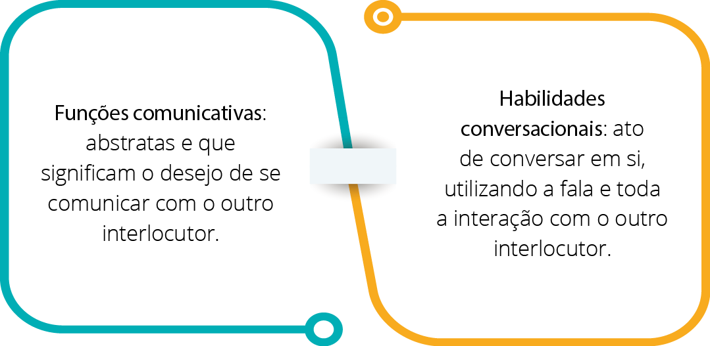
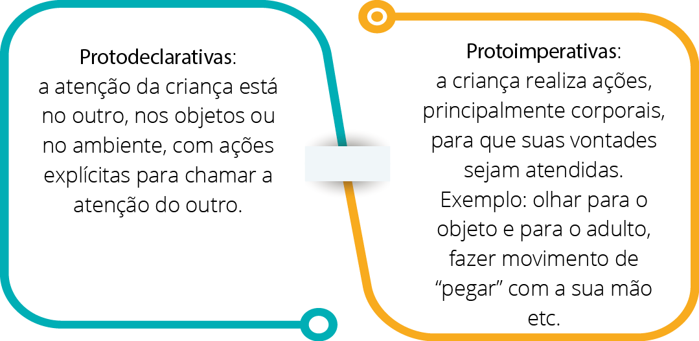

O estudo e o interesse pela linguagem tiveram início na década de 1970, quando a terminologia pragmática foi adotada. Mas o que de fato significa pragmática? É o estudo do uso concreto da linguagem em variados contextos e como um todo: semântica, morfologia e fonologia.
Você pode estar se perguntando: “Por que é importante, para nossos estudos, o conhecimento dessa terminologia?” Porque foi com base nas aquisições científicas no estudo da linguagem que se iniciaram os estudos da comunicação pré-verbal no desenvolvimento infantil. Com base nesses estudos, foi considerado que a criança se comunicava, sim, antes da linguagem verbal, e essa comunicação foi considerada pré-linguística.
Nas pragmáticas da linguagem infantil, as teorias são divididas em:

Ammus/Shutterstock
Entretanto, inúmeros autores propõem ainda uma subdivisão dentro das funções comunicativas. Halliday (1975) apud Hage et al. (2007) proporcionou um estudo clássico enumerando as funções comunicativas do período pré-linguístico, que abrange dos 9 aos 18 meses.
- Função instrumental: quando a criança usa a linguagem para satisfazer suas necessidades materiais.
- Função regulatória: quando a criança usa a linguagem para controlar o comportamento do outro.
- Função interacional: quando a criança usa a linguagem para interagir com as pessoas.
- Função pessoal: quando a criança usa a linguagem para expressar sentimentos pessoais em relação às pessoas ou ao ambiente.
- Função heurística: quando a criança usa a linguagem como instrumento para explorar o ambiente na busca da identificação do nome dos objetos e ações.
- Função imaginativa: quando a criança usa a linguagem de forma lúdica, criando ou recriando o ambiente segundo sua imaginação.
- Função informativa: quando a criança usa a linguagem para transmitir uma informação. Segundo Halliday (1975), essa função surge entre 18 e 24 meses. (HAGE et al., 2007, p. 50, grifos nossos).
Essa divisão é considerada completa e complexa, suprindo as necessidades de entendimento, internalizando e integrando as informações e o conhecimento (HAGE et al., 2007).
Outra abordagem interessante e muito utilizada sobre as funções comunicativas é a de Bates (1976) apud Hage et al. (2007), que as classificou em:

Ammus/Shutterstock
Já as habilidades conversacionais se definem simplesmente pela habilidade de conversar, ato tão comum, simples e integrado ao nosso cotidiano que não pensamos na questão. Para que tenhamos essa interlocução que alcançamos atualmente, um longo caminho é traçado, iniciando com a comunicação pré-verbal.
Existem, de acordo com os estudiosos e a literatura, ações necessárias e imprescindíveis para realizar a ação de conversar. É necessário que os interlocutores sigam uma sequência e uma lógica, regras de conduta, interação e interesse na conversa, entre outras ações. Para que a criança tenha consciência dessas ações, é necessário que tenha acesso a exemplos pertinentes e corretos sobre as habilidades necessárias para conseguir se comunicar e ser um bom ouvinte.
Hage et al. (2007) apresentam as ações correspondentes a cada faixa etária:
- A partir dos 2 anos: a criança consegue interagir pedindo, perguntando ou respondendo a algo.
- A partir dos 3 anos: a criança é capaz de ter uma iniciação de conversa coesa, respondendo aos questionamentos mais específicos feitos a ela.
- Entre os 3 e 4 anos de idade: a criança já é capaz de fazer perguntas e utilizar as funções comunicativas com mais propriedade.
- Entre os 5 e 6 anos de idade: as funções se ampliam e se tornam mais complexas, o que torna possível a conversa com mais de um interlocutor, aprimorando seus conceitos.
Diante disso, podemos dizer que o ato de comunicar é constante, intenso e progressivo, sendo necessários muito treino e muita observação para que todo o conhecimento adquirido e as habilidades possam ser expressos e colocados em prática, literalmente. A seguir, aprofundaremos os estudos sobre a linguagem e o TEA, seus aspectos, conceitos e particularidades.